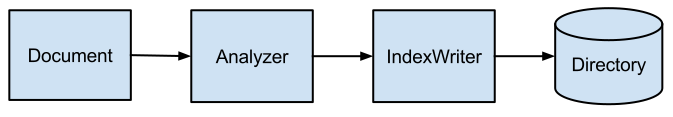
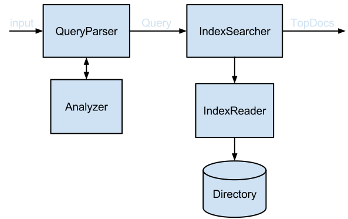
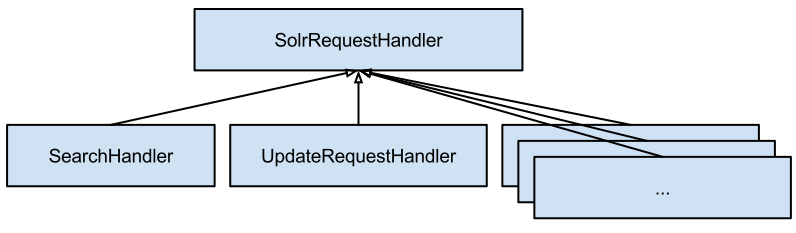
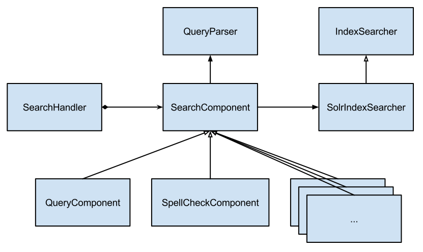

Introduction to Apache Solr
Lucene Community
Andrzej Wisłowski, Maciej Zasada
09-01-2014
Agenda
- Basic concepts
- Indexing
- Searching
- Schema
- Q & A
Apache Lucene
Apache Lucene is a high-performance, full-featured text search engine library written entirely in Java.
Indexing - Lucene
Lucene indexing
Classes used when indexing documents with Lucene
Lucene indexing
Indexing API
class Indexer implements Closeable {
IndexWriter indexWriter
Indexer(File indexLocation) {
def directory = FSDirectory.open(indexLocation)
def indexWriterConfig = new IndexWriterConfig(
Version.LUCENE_46,
new StandardAnalyzer(Version.LUCENE_46))
this.indexWriter = new IndexWriter(directory, indexWriterConfig)
}
(...)
Lucene indexing
Document preparation
private Document prepareDocument(Map<String, Object> fields) {
new Document().with {
fields.each {
key, value -> add(new Field(key, value, TextField.TYPE_STORED))
}
it
}
}
(...)
Lucene indexing
Adding document into index
void index(Map<String, Object> fields) {
def document = prepareDocument(fields)
indexWriter.addDocument(document)
indexWriter.commit()
}
(...)
Searching - Lucene
Lucene searching
Classes used when searching for documents with Lucene
Lucene searching
Searching API
class Searcher {
IndexSearcher indexSearcher
QueryParser queryParser
Searcher(File fileLocation) {
def directory = FSDirectory.open(fileLocation)
indexSearcher = new IndexSearcher(DirectoryReader.open(directory))
queryParser = new QueryParser(
Version.LUCENE_46,
SchemaConstants.FIELD_NAME_CONTENT,
new StandardAnalyzer(Version.LUCENE_46))
}
(...)
Lucene searching
Query processing
List<Document> search(String phrase) {
Query query = queryParser.parse(phrase)
def start = currentTimeMillis()
TopDocs hits = indexSearcher.search(query, 10)
def duration = currentTimeMillis() - start
println("Found $hits.totalHits document(s) in $duration ms for query $phrase")
hits.scoreDocs.collect { indexSearcher.doc(it.doc) }
}
Lucene indexing + searching
given:
def indexer = new Indexer(indexLocation)
indexer.index([
(SchemaConstants.FIELD_NAME_CONTENT): "The quick brown fox jumps over the lazy dog",
(SchemaConstants.FIELD_NAME_ID): "DOC_1"])
indexer.index([
(SchemaConstants.FIELD_NAME_CONTENT): "Lucene in action!",
(SchemaConstants.FIELD_NAME_ID): "DOC_2"])
def searcher = new Searcher(indexLocation)
when:
def hits = searcher.search("+quick")
then:
indexer.countIndexedDocuments() == 2
hits.size() == 1
hits[0].get(SchemaConstants.FIELD_NAME_ID) == "DOC_1"
Apache Solr
Solr is the popular, blazing fast, open source NoSQL search platform from the Apache Lucene project.
Solr request handling
Dispatcher
Solr request handling
web.xml
<filter>
<filter-name>SolrRequestFilter</filter-name>
<filter-class>org.apache.solr.servlet.SolrDispatchFilter</filter-class>
</filter>
<filter-mapping>
<filter-name>SolrRequestFilter</filter-name>
<url-pattern>/*</url-pattern>
</filter-mapping>
Solr request handling
Handler lookup
Solr request handling
solrconfig.xml
<requestHandler name="/update" class="solr.UpdateRequestHandler" />
<requestHandler name="/select" class="solr.SearchHandler" />
Indexing - Solr
Solr indexing
Document preparation
<requestHandler name="/update" class="solr.UpdateRequestHandler" />
Map<String,ContentStreamLoader> registry = new HashMap<String,ContentStreamLoader>();
registry.put("application/xml", new XMLLoader().init(p) );
registry.put("application/json", new JsonLoader().init(p) );
registry.put("application/csv", new CSVLoader().init(p) );
registry.put("application/javabin", new JavabinLoader().init(p) );
registry.put("text/csv", registry.get("application/csv") );
registry.put("text/xml", registry.get("application/xml") );
registry.put("text/json", registry.get("application/json") );
Solr indexing
Update processing
Solr indexing
solrconfig.xml
<updateRequestProcessorChain name="mychain" default="true">
<processor class="solr.CustomUpdateRequestProcessorFactory">
<lst name="name">
<str name="n1">x1</str>
<str name="n2">x2</str>
</lst>
</processor>
<processor class="solr.LogUpdateProcessorFactory" />
<processor class="solr.RunUpdateProcessorFactory" />
</updateRequestProcessorChain>
Solr indexing
solrconfig.xml
<updateHandler class="solr.DirectUpdateHandler2">
<updateLog>
<str name="dir">${solr.ulog.dir:}</str>
</updateLog>
<autoCommit>
<maxTime>15000</maxTime>
</autoCommit>
(...)
</updateHandler>
Solr indexing
solrconfig.xml
<luceneMatchVersion>LUCENE_46</luceneMatchVersion>
<dataDir>${solr.data.dir:}</dataDir>
<directoryFactory name="DirectoryFactory"
class="${solr.directoryFactory:solr.StandardDirectoryFactory}"/>
Searching - Solr
Solr searching
Request processing
Solr searching
solrconfig.xml
<searchComponent name="nameOfCustomComponent" class="my.app.MyQueryComponent"/>
<requestHandler name="/select" class="solr.SearchHandler">
<arr name="components">
<str>nameOfCustomComponent</str>
</arr>
</requestHandler>
Solr searching
solrconfig.xml
public abstract class QParserPlugin
implements NamedListInitializedPlugin, SolrInfoMBean {
public static final Object[] standardPlugins = {
"lucene", LuceneQParserPlugin.class,
"edismax", ExtendedDismaxQParserPlugin.class,
...
<requestHandler name="/select" class="solr.SearchHandler">
<lst name="defaults">
<str name="defType">edismax</str>
</lst>
</requestHandler>
Solr searching
solrconfig.xml
<queryParser name="myparser" class="com.mycompany.MyQParserPlugin"/>
<requestHandler name="/select" class="solr.SearchHandler">
<lst name="defaults">
<str name="defType">myparser</str>
</lst>
</requestHandler>
Index schema
schema.xml file
- what fields are possible for document
- what fields types can be used
- how to index and search each field
<?xml version="1.0" encoding="UTF-8" ?>
<schema name="example" version="1.5">
<types>
<fieldType name="string" class="solr.StrField" sortMissingLast="true" />
</types>
<fields>
<field name="name" type="text" indexed="true" stored="true"/>
<dynamicField name="*_i" type="int" indexed="true" stored="true"/>
</fields>
<uniqueKey>id</uniqueKey>
<copyField source="name" dest="text"/>
<similarity class="com.example.solr.CustomSimilarityFactory"/>
fieldtype
org.apache.lucene.document.FieldType subclass
Must contain:
- name
- class
<fieldType name="boolean" class="solr.BoolField" sortMissingLast="true"/>
fieldtype
optional attributes
- indexed
- stored
- sortMissingLast, sortMissingFirst
- multiValued
- omitTermFreqAndPositions
- omitPositions
- positionIncrementGap
- autoGeneratePhraseQueries
<field name="name" type="text" />
- useful text field
- enable splitting and matching with WordDelimiterFilter
- synonims, stopwords configured by config file
- stemming
<field name="name" type="string" />
- defined in rg.apache.solr.schema.StrField
- not analized
<fieldType name="text_general" class="solr.TextField" positionIncrementGap="100">
<analyzer type="index">
<tokenizer class="solr.StandardTokenizerFactory"/>
<filter class="solr.StopFilterFactory" ignoreCase="true" words="stopwords.txt" />
<!-- in this example, we will only use synonyms at query time
<filter class="solr.SynonymFilterFactory" synonyms="index_synonyms.txt" ignoreCase="true" expand="false"/>
-->
<filter class="solr.LowerCaseFilterFactory"/>
</analyzer>
<analyzer type="query">
<tokenizer class="solr.StandardTokenizerFactory"/>
<filter class="solr.StopFilterFactory" ignoreCase="true" words="stopwords.txt" />
<filter class="solr.SynonymFilterFactory" synonyms="synonyms.txt" ignoreCase="true" expand="true"/>
<filter class="solr.LowerCaseFilterFactory"/>
</analyzer>
</fieldType>
fields
All fields to be used must be defined
Standard fields
- id
- _version_ - optimistic locking solr 4.0
field
Requred attributes
- name
- type (defined in the types section) or class
field
optional attributes (any type attributes can be overriden)
- default
- indexed - required for searching, sorting, facets
- stored - required for highlighting, more like this
- compressed
- multivalued
- termVectors - improve highlighting performance,
- termOffsets - improve highlighting performance, more like this, document fequency
dynamicField
- defined by pattern with *
- must be prefixed ot suffixed by *
- the longest pattern will win, if equal then first defined in schema.xml
<dynamicField name="*_i" type="integer" indexed="true" stored="true"/>
uniqueKey
- unique field in the index - an identifier of the document
- adding new document with existing value will remove old one
<uniqueKey>id</uniqueKey>
copyField
- During indexing we can put data into other fields
- Used for creating textual search where sources are in many fields
- For faceting - when no analize should be done
<copyField source="body" dest="teaser" maxChars="300"/>
<copyField source="*" dest="text"/>
similiaryty
- Can be defined per field definition, and globally for index
<similarity class="solr.DFRSimilarityFactory">
<str name="basicModel">P</str>
<str name="afterEffect">L</str>
<str name="normalization">H2</str>
<float name="c">7</float>
</similarity>
poly fields
- One field can contains subfields
- PointType
- CurrencyField
- for currency we can give own ExchangeRateProvider
<fieldType name="currency" type="currency"
currencyConfig="currency.xml" defaultCurrency="PLN" />
Schema version
<schema name="example" version="1.5">
<!-- attribute "name" is the name of this schema and is only used for display purposes.
version="x.y" is Solr's version number for the schema syntax and
semantics. It should not normally be changed by applications.
1.0: multiValued attribute did not exist, all fields are multiValued
by nature
1.1: multiValued attribute introduced, false by default
1.2: omitTermFreqAndPositions attribute introduced, true by default
except for text fields.
1.3: removed optional field compress feature
1.4: autoGeneratePhraseQueries attribute introduced to drive QueryParser
behavior when a single string produces multiple tokens. Defaults
to off for version >= 1.4
1.5: omitNorms defaults to true for primitive field types
(int, float, boolean, string...)
-->
Example 1
<types>
<fieldType name="string" class="solr.StrField" sortMissingLast="true" />
<fieldType name="integer" class="solr.TrieIntField" sortMissingLast="true" />
Example 1 c.d.
<fieldType name="date" class="solr.TrieDateField" precisionStep="0" positionIncrementGap="0"/>
<fieldType name="keyword" class="solr.TextField" sortMissingLast="true">
<analyzer>
<tokenizer class="solr.KeywordTokenizerFactory" />
<filter class="solr.LowerCaseFilterFactory" />
</analyzer>
</fieldType>
<fieldType name="url_email" class="solr.TextField">
<analyzer type="index">
<tokenizer class="solr.UAX29URLEmailTokenizerFactory" />
<filter class="solr.WordDelimiterFilterFactory" generateWordParts="1" generateNumberParts="1" catenateWords="0"
catenateNumbers="0" catenateAll="0" preserveOriginal="1" />
<filter class="solr.LowerCaseFilterFactory" />
</analyzer>
<analyzer type="query">
<tokenizer class="solr.UAX29URLEmailTokenizerFactory" />
<filter class="solr.LowerCaseFilterFactory" />
</analyzer>
</fieldType>
</types>
Example 1 c.d.
<fields>
<field name="id" type="string" indexed="true" stored="true" required="true" />
<field name="poolName" type="keyword" indexed="true" stored="true" required="true" />
<field name="code" type="keyword" indexed="true" stored="false" required="false" />
<field name="amount" type="integer" indexed="false" stored="true" required="false" />
<field name="email" type="url_email" indexed="true" stored="true" required="false" />
<field name="orderCreationDate" type="date" indexed="true" stored="true" required="false" />
</fields>
<uniqueKey>id</uniqueKey>
<solrQueryParser defaultOperator="AND" />
Example 2
<types>
<fieldType name="string" class="solr.StrField" sortMissingLast="true" />
<fieldType name="boolean" class="solr.BoolField" sortMissingLast="true" />
<fieldtype name="binary" class="solr.BinaryField" />
<fieldType name="int" class="solr.TrieIntField" precisionStep="0" positionIncrementGap="0" />
<fieldType name="float" class="solr.TrieFloatField" precisionStep="8" positionIncrementGap="0"
sortMissingLast="true" />
<fieldType name="float_facet" class="solr.TrieFloatField" precisionStep="8" positionIncrementGap="0" />
<fieldType name="long" class="solr.TrieLongField" precisionStep="0" positionIncrementGap="0" />
<fieldType name="double" class="solr.TrieDoubleField" precisionStep="0" positionIncrementGap="0" />
Example 2 c.d.
<fieldType name="date" class="solr.TrieDateField" precisionStep="0" positionIncrementGap="0"
sortMissingLast="true" />
<fieldType name="date_facet" class="solr.TrieDateField" precisionStep="6" positionIncrementGap="0" />
<fieldType name="currency" class="solr.CurrencyField" precisionStep="8" defaultCurrency="PLN"
currencyConfig="currency.xml" />
<fieldType name="text_ws" class="solr.TextField" positionIncrementGap="100">
<analyzer>
<tokenizer class="solr.WhitespaceTokenizerFactory" />
</analyzer>
</fieldType>
Example 2 c.d.
<fieldType name="text" class="solr.TextField" positionIncrementGap="100">
<analyzer type="index">
<tokenizer class="solr.StandardTokenizerFactory" />
<filter class="solr.LowerCaseFilterFactory" />
<filter class="solr.StopFilterFactory" ignoreCase="true" words="stopwords.txt"
enablePositionIncrements="true" />
<filter class="solr.HunspellStemFilterFactory" dictionary="pl_PL.dic" affix="pl_PL.aff" ignoreCase="true" />
</analyzer>
<analyzer type="query">
<tokenizer class="solr.StandardTokenizerFactory" />
<filter class="solr.LowerCaseFilterFactory" />
</analyzer>
</fieldType>
<fieldType name="text_facet" class="solr.TextField" sortMissingLast="true" omitNorms="true" />
</types>
Example 2 c.d.
<fields>
<field name="id" type="string" indexed="true" stored="true" required="true" />
<field name="text" type="text" indexed="true" stored="false" multiValued="true" />
<dynamicField name="*_txt" type="text" indexed="true" stored="true" multiValued="true" />
<dynamicField name="*_tf" type="float" indexed="true" stored="true" />
<dynamicField name="*_dt" type="date" indexed="true" stored="true" />
<dynamicField name="*_b" type="boolean" indexed="true" stored="true" />
<dynamicField name="*_ct" type="text_ws" indexed="true" stored="true" multiValued="true" />
<dynamicField name="*_txt_facet" type="text_facet" indexed="true" stored="true" multiValued="true" />
<dynamicField name="*_dt_facet" type="date_facet" indexed="true" stored="true" />
<dynamicField name="*_tf_facet" type="float_facet" indexed="true" stored="true" />
<dynamicField name="*_ct_facet" type="text_ws" indexed="true" stored="true" multiValued="true" />
Example 2 c.d.
<dynamicField name="categoryLevel*" type="text_ws" indexed="true" stored="true" multiValued="true" />
</fields>
<uniqueKey>id</uniqueKey>
<solrQueryParser defaultOperator="AND" />